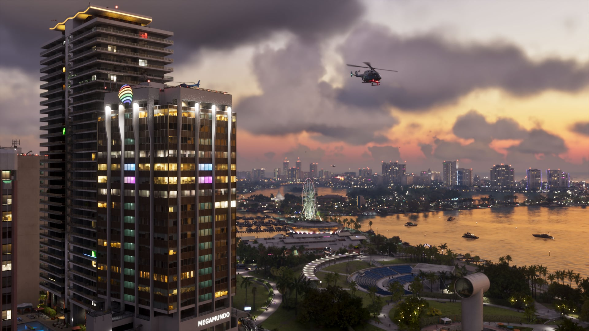

© Rockstar Games / Take-Two Interactive
Game Informer : ce que révèle le dossier de couverture
EN BREF
- Dossier de 14 pages avec entretiens Rockstar et 12 captures inédites
- Carte environ deux fois plus grande que GTA V
- Météo « localisée et persistante », vent dynamique, ouragans
- Plus de 170 espèces animales, dont des espèces invasives
- Police : retour des 6 étoiles et nouveau « système de Heat »
Le 29 septembre 2026, le magazine Game Informer a mis en ligne un dossier de couverture de 14 pages sur GTA VI, avec des entretiens exclusifs avec Rockstar et 12 captures inédites. Le numéro a été proposé gratuitement dans l'application du magazine.
La carte
Décrite comme « plus dense, détaillée et interactive », elle serait environ deux fois plus grande que celle de GTA V. Les six régions restent Vice City, les Leonida Keys, Grassrivers, Port Gellhorn, Ambrosia et le parc national du Mont Kalaga. Rockstar explique s'être longuement documenté sur Miami et la Floride pour créer son monde le plus fidèle et vivant à ce jour.
La météo
Le système a été repensé pour être « localisé et persistant » : il peut faire beau d'un côté de la carte et pleuvoir de l'autre. Orages tropicaux, ouragans, nuages dynamiques et arcs-en-ciel sont au programme. Le vent a lui aussi été retravaillé : brises venues de la mer après le coucher du soleil, courants d'air ascendants, et bâtiments qui coupent le vent.
La faune
Plus de 170 espèces animales (certains médias parlent de « plus de 150 »), dont plus de 60 types d'oiseaux et plus de 30 mammifères terrestres. On retrouve des animaux typiques de Floride — lamantins, flamants, pélicans, alligators — mais aussi des espèces invasives bien réelles là-bas : iguanes verts, crapauds buffles, chats errants et même macaques rhésus. Voir la fiche Faune de Leonida.


Images : © Rockstar Games / Take-Two Interactive
La police et le « système de Heat »
Les six étoiles de recherche reviennent, avec un nouveau système de « Heat » : la police recueille des informations sur l'apparence du joueur et le lieu du crime. Changer de tenue ou de véhicule peut donc aider à lui échapper. Voir aussi Recherche à 6 étoiles et « profil criminel ».